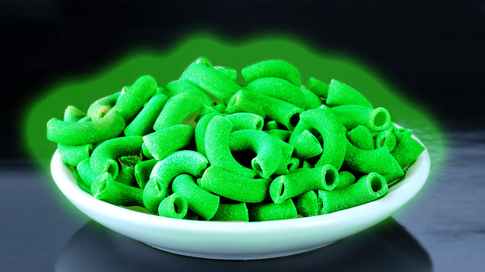

Salvete!
My name is Augustinus, also known as Elias Oberholtz or as EleuedistCath, or as various other things and names. I'm a very poor Catholic, not in the monetary sense, but in the sense of morality. Very very poor in this regard. Whether I shall improve is a question for the future, it would seem.
This website will be similar in structure to the last one, but slightly better organised (for my sanity!).
Miscellaneous
Various facts about me: I'm a monarchist, I'm Californian, and that's about all the interesting stuff from me.
